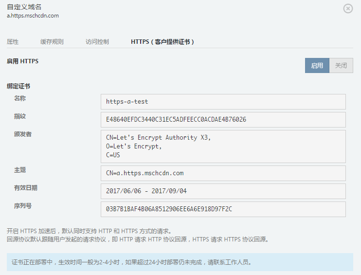

Azure China CDN用户上传HTTPS自有证书正式发布
Azure CDN自2016年5月份开始在CDN管理门户实现step by step的全新开通引导流程，用户可以清楚的了解到整个开通流程每一步骤的状态信息且开通周期缩短到5-7天左右，从而获得一个更好的用户体验。这种方式是Azure CDN代为申请证书，属于高级版CDN服务。高级版服务于2017年5月1日起降价，降价幅度高达33%，详情请参考请参考Azure官方网站。
随着苹果宣布2017年开始App Store中所有的APP必须启用HTTPS，百度、谷歌对HTTPS加密的安全网站进行优先排名，用户对HTTPS加密访问的需求也水涨船高。我们收到很多用户请求要求上传自有证书。经过产品组的不懈努力，向所有付费用户开放了自有证书上传的自助化操作和自动化部署。
注意客户上传自有证书的HTTPS加速将从2017年7月1日起，使用标准版服务价格，2017年7月1日前，该服务属于高级服务，使用高级服务价格。具体计费方式请参见Azure官方网站。
用户可以通过新版CDN管理门户，为所有符合条件的域名开启自有证书的HTTPS加速（付费账号下所有的标准版CDN域名，图片加速节点除外）。自助化上传自有证书，并将证书和域名进行绑定，实现自动化证书部署。
注意：在“Azure门户预览”新建CDN Profile和节点时，如果准备启用自有证书的HTTPS加速，Pricing Tier请选择“S1 Standard”。"P1 Premium"中的HTTPS是指Azure CDN代为申请证书。
自助化上传证书步骤如下：
-
开启HTTPS：需跳转到新版CDN管理门户，进行HTTPS服务的开启。

-
上传证书：在”证书管理“界面，上传PEM格式的证书和私钥。支持泛域名证书上传。

-
域名绑定证书：到”域名管理“对域名启用HTTPS服务，并绑定相应证书。
-
证书部署：绑定域名后，系统会提示“证书正在部署中，生效时间一般为2-4小时，如果超过24小时部署仍未完成，请联系工作人员。 ”

-
域名绑定成功后，系统会提示“证书绑定成功，可以通过HTTPS访问该加速域名”，并看到证书详情。同时该域名的“HTTPS状态（客户提供证书）”变为“活动”。
-
查看是否生效：通过HTTPS访问域名，可以看到带小锁的标志，表示HTTPS加速启用成功。
Azure CDN代为申请证书的HTTPS加速服务和用户自有证书的区别
Azure CDN代为申请证书的HTTPS加速服务和用户自有证书都是自助化配置，性能上差异不大，主要区别在于价格和证书：
1. 价格
2. 证书
- Azure代为申请证书的SSL证书类型为SAN多域名证书（SAN/UCC SSL），SANs SSL证书允许您在同一张证书中，添加多个需要保护的"域名"或"服务器"名。证书签发机构： https://www.digicert.com/。
- 用户自有证书支持SNI证书，SNI证书可以多个HTTPS 客户共享同一个IP 地址。SNI证书不支持Windwos XP系统下所有的IE版本，浏览器会提示不受信任。
3. 证书部署时间
- Azure CDN代为申请证书的部署时间是5-7个工作日。
- 用户自有证书的方式，部署时间一般为2-4小时。
4. 选择建议
- 如果用户已经有加速域名对应的证书，可以选择用户自有证书的方式。SNI证书不支持Windwos XP系统下所有的IE版本，浏览器会提示不受信任。
- 如果用户没有证书，又不想自己申请，可以选择Azure CDN代申请证书的方式。
5. 开通步骤
- Azure CDN代为申请证书的HTTPS，需要开工单申请开通，然后到portal上了解到整个开通流程每一步骤的状态信息，请参考Azure CDN HTTPS 加速服务 - AzureCDN待申请证书。
- 用户自有证书的方式，直接跳转到新版CDN管理门户，上传证书，并将域名和证书进行绑定即可。
后续更新